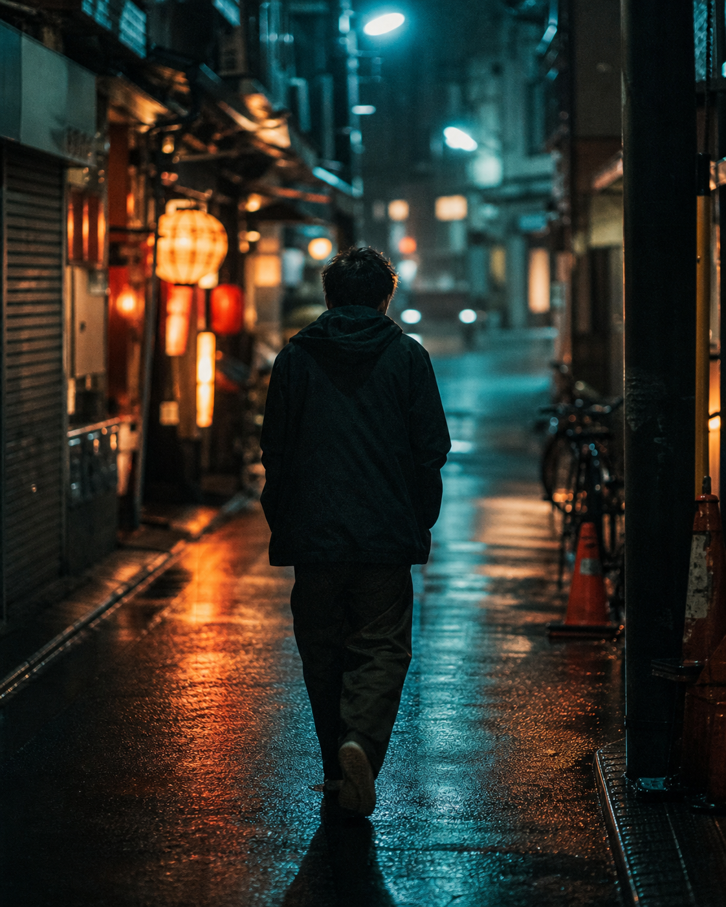
Documentary Short
After Rain
Ein stilles Portrait ueber Bewegung, Stadtlicht und die Momente zwischen Entscheidung und Aufbruch.
Direction / Camera / EditFilmmaker / Director / Editor
Filme mit Rhythmus, Textur und Haltung. Fuer Marken, Artists und Menschen, die nicht nur sichtbar sein wollen, sondern fuehlbar.
Portfolio fuer bewegte Bilder
Ich entwickle visuelle Geschichten von der ersten Idee bis zum finalen Export: konzentriert, schnell, nah an der Szene und mit einem Look, der auf Screens sofort funktioniert.
Showreel
Selected Work
Alle Arbeiten
Documentary Short
Ein stilles Portrait ueber Bewegung, Stadtlicht und die Momente zwischen Entscheidung und Aufbruch.
Direction / Camera / Edit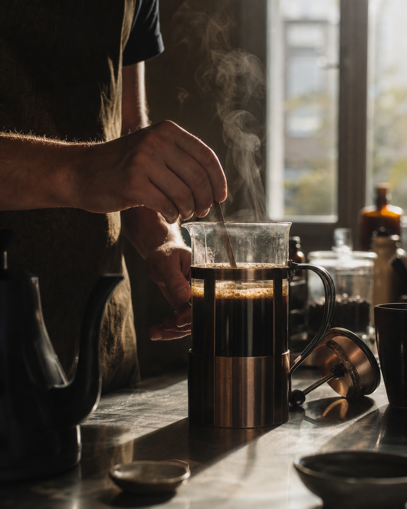
Branded Film
Taktile Produktbilder mit ruhigem Tempo, warmer Lichtfuehrung und einem Look, der nah am Alltag bleibt.
Concept / Camera / Color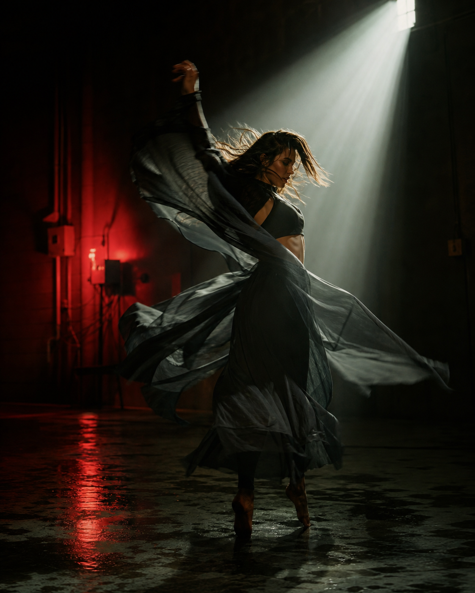
Music Video
Koerper, Schatten und Bewegung als treibende Form. Ein visuelles Stueck fuer Performance und Rhythmus.
Direction / Lighting / EditCompanies & Collaborations
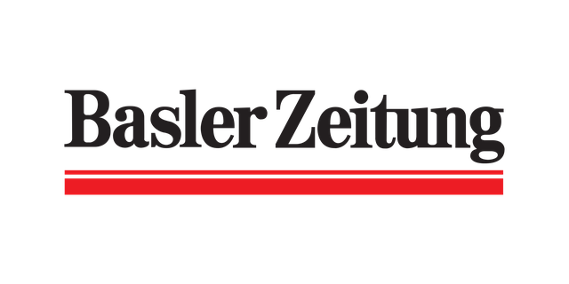
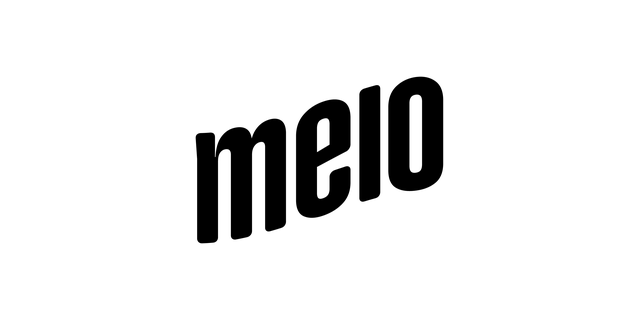
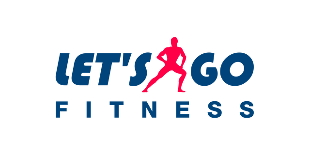
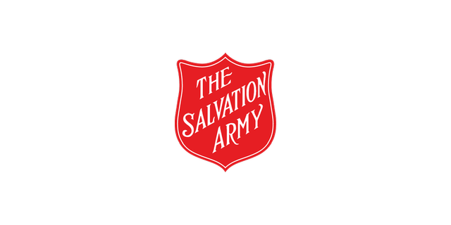
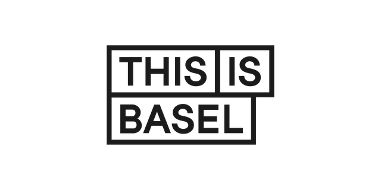
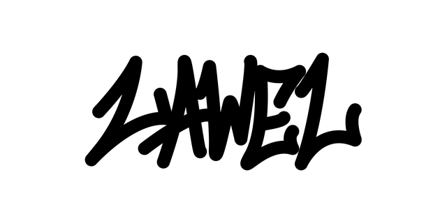
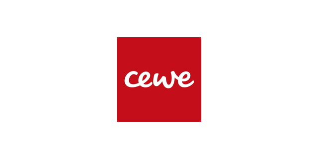
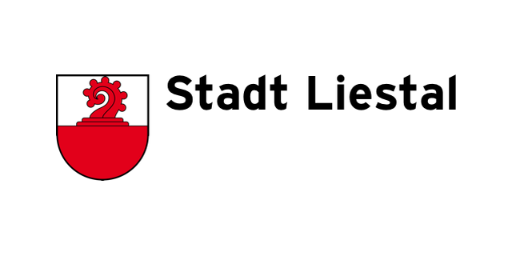
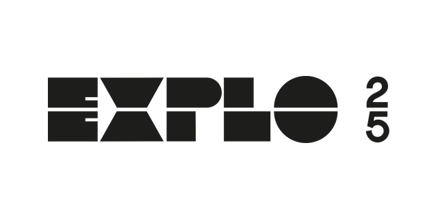
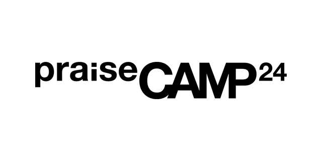
"Platz fuer echtes Kundenfeedback: ein kurzer Satz zu Zusammenarbeit, Tempo und Ergebnis."
"Platz fuer eine zweite Kundenstimme: was am Set, im Schnitt oder am finalen Look ueberzeugt hat."
"Platz fuer ein drittes Testimonial: praezise, glaubwuerdig und direkt austauschbar."
Services
Neue Projekte
Fuer Musikvideos, Kampagnen, Portraits und Social-First-Filme. Schreib mir mit Idee, Timing und Ziel des Projekts.
Projekt anfragen